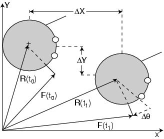

Figure 1: Value of vector F must be recomputed after Critter moves laterally by
X,
Y, and rotationally by
q.

 X, Y, and rotationally by q.X, Y, and rotationally by q.
X, Y, and rotationally by q.X, Y, and rotationally by q.